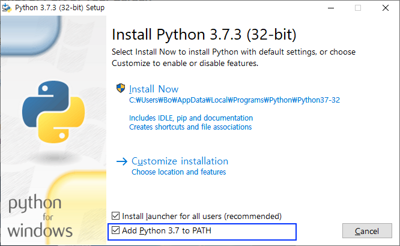

TUNE형식 로그 익스포트 스크립트 가이드¶
최종 수정일 : 2019년 9월 9일
작성자 : 손보형¶
개요¶
- 이 스크립트는 Custom Export API를 사용해서 (구)TUNE 포멧의 로그를 익스포트 하는 샘플 스크립트입니다.
- 필요시 이 스크립트를 사용해서 로그 익스포트를 하실 수 있으며, ETL스크립트 작성시 참고용으로도 사용하실 수 있습니다.
- 현재는 Branch의 필드중 일부만 제한적으로 익스포트가 가능하며, 올 연말쯤 대부분의 Branch 전용 필드들도 Customer Export API 및 이 스크립트를 통해서 익스포트가 가능해 질 것입니다.
- 이 스크립트는 Python v3.7.x에서 실행이 가능하며, v2.x에서는 실행되지 않습니다.
- API Key는 가급적 공유하지 마시고 개인의 키를 개인만 사용해 주시기 바랍니다. API Key의 유출이 우려되는 경우는 서포트팀(support@branch.io)으로 해당키의 삭제와 신규생성을 요청하실 수 있습니다.
- 디폴트로 한번의 요청당 최대 2백만개의 레코드까지만 익스포트가 가능합니다. 그러므로 익스포트시 레코드 갯수가 정확히 2백만개 라면, 더 많은 레코드가 있으나 일부 레코드가 익스포트되지 못함을 의미합니다. 볼륨이 많은 특정이벤트나 오픈로그에서 이런 경우가 발생할 수 있으며, 이 경우 좀더 좁은 시간범위별 또는 이벤트별로 나누어서 익스포트 하시기 바랍니다.
- 설치방법 안내 동영상(임시버전)
신규버전으로 업데이트시 주의사항¶
- 기존 스크립트는 계속 사용가능합니다.
- 신규버전은 일단 기존 스크립트와 다른 디렉토리에 설치후, 정상동작이 확인되면 그때 부터 신규 스크립트로 바꿔서 사용하는 것을 권장합니다.
- config.json파일은 가급적 신규버전과 함께 릴리즈 된 파일에 기존 버전의 설정값을 업데이트 해서 사용하는 것이 권장됩니다.
릴리즈 히스토리¶
- v0.1 : 최초 릴리즈 (2019년 4월 26일)
- v0.1.1 : (2019년 8월 6일)
- 변경사항 :
- 설정파일 형식 일부 변경
- 엔드포인트 URL을 TUNE도메인에서 Branch도메인으로 변경.
- 버그픽스: 날짜 범위 일 또는 시간단위로 선택시 마지막 1초의 로그가 익스포트 안되는 버그 수정.
- 신규기능:
app_id,publisher_name,publisher_id,event_type(site_event.type)을 통한 필터링기능 추가- reinstall 익스포트 기능 추가.
- 변경사항 :
- v0.1.2 : (2019년 9월 9일)
- Custom Export API의 Caching 기능을 우회하기 위해서 filter_site_ids 또는 filter_app_ids에 실제 앱아이디 또는 사이트 아이디 대신 random 문자열을 추가하면 랜덤 아이디가 추가됨.
- 실패시 재시도 전반적인 재작성
- config파일의 start_date, datetime_range 를 커먼드 라인에서 동적설정 가능.
- TODO: 원하시는 기능 추가 요청이 있으신 경우 bson@branch.io로 연락주시기 바랍니다.
- 이벤트 필터링시 like로 패턴매칭 기능 추가. (현재는 이벤트 이름이 정확하게 매칭되어야만 익스포트)
click,event_item로그 익스포트 기능 추가.- GitHub를 통한 배포
- 패키지 설치 간편화
- 긴 기간의 로그 익스포트시 짧은 기간으로 나누어 한번에 익스포트하는 기능 추가.
- 하루의 로그를 시간 단위로 나누어서 병렬로 익스포트
- 1달의 로그를 일단위로 나누어서 병렬로 익스포트
- GUI (??)
- 익스포트한 로그파일을 이벤트, 매체별로 별도 파일로 분할
- 개별 로그파일을 하나로 합치는 기능.
- 익스포트한 로그에서 커스텀 집계리포트 생성. (트래픽분석이나 Fraud확인 용도)
1. 파이썬 설치¶
- 아래의 웹사이트에서 Python 3.7.x을 설치합니다. Python 2.x와는 호환되지 않습니다.
-
다른 파이썬 스크립트들도 사용 하신다면 가상환경에 설치하는 것이 바람직 합니다.
-
맥: 특이사항 없음.
-
윈도우: 설치시 주의사항
- 설치 인스톨러의 화면하단
Add Python 3.7. to PATH체크

- 설치 인스톨러의 화면하단
2. Python 설치확인¶
- 맥: 맥에서는 2.x가 기본적으로 설치되어 있으며, 여기에 3.x를 추가로 설치하게 됩니다.
python명령어로는 2.x가 사용되며,python3명령으로 3.x버전을 사용할 수 있습니다.- 아래와 같이 명령어가 수행되면 정상입니다.
Bo-hyungs-MacBook:log son$ python --version Python 2.7.10 Bo-hyungs-MacBook:~ son$ python3 --version Python 3.7.3
- 윈도우: Python이 기본으로 설치되어있지 않으며, 3.7을 설치하게 되면
python명령어로 Python 3.x를 사용하게 됩니다.- 아래와 같이 명령어가 수행되면 정상입니다.
C:\Users\Bo>python --version Python 3.7.3
- 아래와 같이 명령어가 수행되면 정상입니다.
3. PIP 설치확인¶
- PIP는 Python에서 패키지(라이브러리)를 설치해주는 툴입니다. PIP가 정상적으로 실행되는지 확인합니다.
- 맥:
python3명령어 사용.- 아래와 같이 명령어가 수행되면 정상입니다.
Bo-hyungs-MacBook:~ son$ pip3 --version pip 19.0.3 from /Library/Frameworks/Python.framework/Versions/3.7/lib/python3.7/site-packages/pip (python 3.7)
- 아래와 같이 명령어가 수행되면 정상입니다.
- 윈도우:
python명령어 사용.- 아래와 같이 명령어가 수행되면 정상입니다.
C:\Users\Bo>pip --version pip 19.0.3 from c:\users\bo\appdata\local\programs\python\python37-32\lib\site-packages\pip (python 3.7)
- 아래와 같이 명령어가 수행되면 정상입니다.
4. requests 패키지(라이브러리) 설치¶
-
requests는 로그 익스포트에서 사용되는 추가 설치가 필요한 패키지(라이브러리)이므로 스크립트 실행전 인스톨 하셔야합니다. -
맥:
pip3명령어 사용.- 아래와 같이 명령어를 수행했을때 설치메시지가 나오면 정상입니다.
Bo-hyungs-MacBook:log son$ pip3 install requests
- 아래와 같이 명령어를 수행했을때 설치메시지가 나오면 정상입니다.
- 윈도우:
pip명령어 사용.- 아래와 같이 명령어를 수행했을때 설치메시지가 나오면 정상입니다.
C:\Users\Bo\log>pip install requests
- 에러가 발생할경우 아래의 명령어 수행후 다시 시도해 보시기 바랍니다.
C:\Users\Bo\log>pip install --trusted-host pypi.python.org --trusted-host files.pythonhosted.org --trusted-host pypi.org python-certifi-win32
- 아래와 같이 명령어를 수행했을때 설치메시지가 나오면 정상입니다.
5. 스크립트 실행전 확인 사항¶
- 스크립트 :
export.py -
설정파일 :
- 함께 제공되는
config.json파일이 스크립트 실행에 사용되는 JSON으로 작성된 설정파일 샘플입니다. -
샘플 설정파일 :
- 스크립트 수행중 에러가 난다면 샘플파일을 변경시 잘못된 JSON 형식으로 저장되었기 때문일 것입니다.
- 기존 버전의 설정파일에서 일부 변경사항이 있으니 새로운 파일을 사용하시기 바랍니다.
- 변경사항:
advertiser.name에서advertiser_name로 Key 이름변경.days와hours대신datetime_range로 변경- 지원 필터링 옵션 추가
branch_redirect제거
- 변경사항:
{ "advertiser_name": "Awesome Corp", "advertiser_id": "123456", "api_key" : "YOUR_API_KEY", "start_date": "2019-07-05T00:00:00", "datetime_range": "1d", "timezone": "Asia/Seoul", "filter_site_ids": ["123456", "456789"], "filter_app_ids": [], "filter_publisher_ids": [], "filter_publisher_names": ["Google AdWords"], "filter_site_event_names": ["purchase"], "filter_site_event_types": [] }
-
필수 설정 값
advertiser_name: 광고주이름(Branch에서는 Organization Name), 로그파일 다운로드시 파일이름의 프리픽스로만 사용됨.advertiser_id: 광고주ID(Branch에서는 Organization ID)- Branch 대쉬보드의 광고주 페이지의 Account Settings페이지에서 확인 (앱페이지 아님)
api_key:- 키를 신규로 생성하시려는 경우 서포트팀(support@branch.io)을 통해서 요청해주시기 바랍니다.
start_date: 년월일시분초YYYY-MM-DDTHH-MM-SS형식의 시작시각- 예시)
2019-04-05T00:00:00: 2019년 4월 5일 0시 0분 0초2019-04-05T01:00:00: 2019년 4월 5일 1시 0분 0초
- 명령어 옵션으로 설정파일의 값을 덮어쓸 수 있습니다.
python3 export.py --log install --start_date 2019-04-05T00:00:00
- 예시)
-
datetime_range:start_date로부터 얼마 만큼의 기간 동안의 로그를 익스포트 할지 설정합니다.- 기간은 주,일,시간,분 단위로 지정가능하며, 각각 w, d, h, m을 사용합니다.
- 예시)
- 시작일시부터 1주일간의 로그 익스포트:
1w - 시작일시부터 2일간의 로그 익스포트:
2d - 시작일시부터 3시간의 로그 익스포트:
3h - 시작일시부터 10분간의 로그 익스포트:
10m
- 시작일시부터 1주일간의 로그 익스포트:
- 명령어 옵션으로 설정파일의 값을 덮어쓸 수 있습니다.
python3 export.py --log event --datetime_range 10m
-
timezone:- 타임존 데이터베이스 페이지의 TZ database name 컬럼의 값을 설정합니다.
- 한국표준시는
Asia/Seoul, UTC는UTC를 설정합니다.
-
필터링용 설정 값 (선택사항)
filter_site_ids:- 특정 TUNE앱(TUNE Site)들의 로그만 익스포트할 경우 설절합니다.
- 필터링을 하지 않을 경우:
"filter_site_ids": []와 같이 설정합니다. - 필터링이 필요한 경우:
"filter_site_ids": ["111111", "222222"]와 같이 쌍따옴표(") 안에 사이트 아이디를 콤마(,)를 구분자로 설정합니다. - API의 캐슁기능 우회: API에서는 동일한 요청을 반복할 경우 기존 익스포트된 로그를 리턴해주는 기능이 있습니다.
"filter_site_ids": ["123456789012345678", "random"]와 random을 추가하면 실행시 랜덤 아이디가 설정되며 항상 새로은 익스포트 작업이 수행되게 할 수 있습니다.
filter_app_ids:- 특정 Branch앱들의 로그만 익스포트할 경우 설정합니다.
- Branch에서는 Android 와 iOS 앱이 각각의 별도의 TUNE Site로 되어있는 것과 달리 두 OS가 하나의 Branch앱으로 묶여져 있습니다.
- Branch 앱ID 확인은 Branch 대쉬보드의 해당앱 페이지 내의 Account Settings페이지에서 확인합니다.
- 필터링을 하지 않을 경우:
"filter_app_ids": []와 같이 설정합니다. - 필터링이 필요한 경우:
"filter_app_ids": ["123456789012345678", "123456789012345679"]와 같이 쌍따옴표(") 안에 사이트 아이디를 콤마(,)를 구분자로 설정합니다. - API의 캐슁기능 우회: API에서는 동일한 요청을 반복할 경우 기존 익스포트된 로그를 리턴해주는 기능이 있습니다.
"filter_app_ids": ["123456789012345678", "random"]와 random을 추가하면 실행시 랜덤 아이디가 설정되며 항상 새로은 익스포트 작업이 수행되게 할 수 있습니다. filter_site_ids와filter_app_ids둘 중 하나만 설정합니다.
- 특정 Branch앱들의 로그만 익스포트할 경우 설정합니다.
filter_publisher_ids: 특정 경우를 제외하고는 사용을 추천하지 않습니다.- 특정 매체의 로그만 익스포트할 경우 TUNE에서 매체별로 할당되었던 publisher_id를 설정합니다.
- TUNE에서 사용하지 않던 신규매체의 경우는 publisher_id가 0으로 설정되므로, Organic만 필터링할때만 사용하는 것이 좋습니다. 오가닉의
publisher_id는0입니다. - 필터링 하지 않을 경우:
"filter_publisher_ids": []와 같이 설정합니다. - 필터링이 필요한 경우:
"filter_publisher_ids": ["0", "222222"]와 같이 쌍따옴표(") 안에 사이트 아이디를 콤마(,)를 구분자로 설정합니다.
filter_publisher_names:- 특정 매체의 로그만 익스포트할 경우 매체이름을 설정합니다.
- Branch 대쉬보드의 Ads - Partner Management 페이지의 매체명을 사용합니다.
- 필터링 하지 않을 경우:
"filter_publisher_names": []와 같이 설정합니다. - 필터링이 필요한 경우:
"filter_publisher_names": ["Google AdWords", "Facebook"]와 같이 쌍따옴표(") 안에 사이트 아이디를 콤마(,)를 구분자로 설정합니다.
filter_site_event_names:- 이벤트로그 익스포트시만 적용되며 인스톨 등 다른 로그의 익스포트시는 무시됩니다.
- 특정 이벤트들만 필터링할 경우에 설정합니다.
- 필터링 하지 않을 경우:
"filter_site_event_names": []와 같이 설정합니다. - 필터링이 필요한 경우:
"filter_site_event_names": ["purchase", "login"]와 같이 쌍따옴표(") 안에 사이트 아이디를 콤마(,)를 구분자로 설정합니다.
filter_site_event_types: 일반적인 경우 사용을 추천하지 않습니다.- 이벤트로그 익스포트시만 적용되며 인스톨 등 다른 로그의 익스포트시는 무시됩니다.
- 특정 이벤트타입들만 필터링할 경우에 설정합니다.
- 필터링 하지 않을 경우:
"filter_site_event_types": []와 같이 설정합니다. - 필터링이 필요한 경우:
"filter_site_event_types": ["purchase", "registration"]와 같이 쌍따옴표(") 안에 사이트 아이디를 콤마(,)를 구분자로 설정합니다.
- 함께 제공되는
6. 로그별 익스포트시 추출필드 설정¶
- 로그별 익스포트 필드 설정파일:
- 인스톨 로그:
fields_install.json - 이벤트 로그:
fields_event.json - 오픈 로그:
fields_open.json - 리인스톨 로그:
fields_reinstall.json - 이벤트아이템 로그:
fields_event_item.json
- 인스톨 로그:
- 설정파일 샘플
created id status status_code mat_id google_aid os_id ios_ifa ios_ifv #platform_aid
- 스크립트 실행시 4개의 파일을 모두 스크립트 파일과 동일한 디렉토리에 있어야합니다.
- 스트립트와 함께 전달드리는 CSV파일에서 필요한 필드들만 남겨두시고 필요없는 필드들은 삭제후 사용하시기 바랍니다.
- CSV파일 수정시 메모장 같은 텍스트에디터를 사용하거나 엑셀로 열어 수정한뒤 CSV로 저장하시기 바랍니다.
- 필드명은 기존에 로그익스포트 했던 CSV파일의 첫번째 열(헤더행)에 설정되었던 필드명이 사용됩니다.
- 익스포트할 필드들을 한줄에 하나씩 설정하시기 바랍니다.
#를 필드명 앞에 추가하면 해당 필드의 익스포트를 임시로 제외할 수 있습니다.- 시인성을 위해서 값이 없는 빈행을 추가하거나 필드명앞에 공백문자를 추가할 수 있으며, 빈행과 필드명앞 공백문자는 무시됩니다.
7. 스크립트 실행¶
- 스크립트 실행 이전에 위의 파이썬&필요패키지 설치, 설정파일 대한 설명을 먼저 참고하세요.
-
설치 및 실행 준비
- (1)
log_export_x_x_x.zip로 전달되는 압축된 스크립트및 설정파일을 다운로드합니다. - (2) 다운로드된 파일을 OS별 아래의 위치로 이동시킵니다. (원하는 곳으로 이동시키셔도 무방합니다.)
- 맥: 홈디렉토리
- 윈도우:
C:/
- (3) 압축풀기
- 아래의 파일들이 있는지 확인합니다. :
export.py: 익스포트 스크립트config.json: 설정파일fields_install.csv, fields_event.csv, fields_open.csv, fields_reinstall.csv: 로그별 추출필드 설정파일
- 아래의 파일들이 있는지 확인합니다. :
- (4) 스크립트가 저장된 폴더로 이동
- 맥 :
Command + Space로 스팟라이트 검색창 열기terminal명령어로 터미널 프로그램을 실행cd log_export_x_x_x명령어로 스크립트 설치 폴더로 이동
- 윈도우 :
Command + R로 실행창을 열거나 윈도우시작버튼 옆 윈도우 검색창에서cmd명령어 실행.cd C:\log_export_x_x_x명령어로 스크립트 설치 폴더로 이동
- 맥 :
- (5)
config.json파일을 메모장 또는 텍스트에디터로 열어서 필수 정보들을 업데이트 합니다.advertiser_name: 회사 이름을 설정합니다.advertiser_id: 광고주 아이디를 설정합니다.api_key: API 키를 설정합니다.start_date,datetime_range,timezone,filter_site_ids: 적절한 값으로 설정합니다.- 나머지 값들은 추후 필요시 적절히 설정합니다.
- (1)
-
설정파일과 익스포트할 로그 지정방법
--config 설정파일명: 실행시 사용할 설정파일을 지정합니다. 미지정시config.json파일이 디폴트로 사용됩니다.--log 로그명: 익스포트할 로그를 지정합니다. 로그명은install,event,open,reinstall중에서 하나를 선택합니다. 미지정시 인스톨로그가 디폴트로 설정됩니다.
- 스트립트 실행
- 맥:
python3명령어 사용.python3대신python을 사용하면 맥에서 기본으로 설치되어있는 Python 2.7로 실행되어 에러가 발생합니다.- 로그별 명령어 샘플 : (아래의 샘플별로 Copy&Paste 하셔서 테스트 해보시기 바랍니다.)
python3 export.py --config config.json --log install python3 export.py --config config.json --log event python3 export.py --config config.json --log open python3 export.py --config config.json --log reinstall
- 윈도우:
python명령어 사용.- 로그별 명령어 샘플 : (아래의 샘플별로 Copy&Paste 하셔서 테스트 해보시기 바랍니다.)
python export.py --config config.json --log install python export.py --config config.json --log event python export.py --config config.json --log open python export.py --config config.json --log reinstall
- 로그별 명령어 샘플 : (아래의 샘플별로 Copy&Paste 하셔서 테스트 해보시기 바랍니다.)
- 맥:
8. 다운로드된 로그파일¶
광고주이름_광고주아이디_로그이름_시작일시_끝일시_타임존도시_익스포트작업ID.csv의 형식으로 스크립트가 있는 디렉토리에 저장됩니다.- 설정파일중
advertiser_name은 익스포트된 로그의 파일이름을 정하는 부분에만 사용되므로 예를 들어 앱별로 각각 다른 config파일을 사용해서 익스포트 하는 경우에 해당값을 활용할 수 있습니다. - 파일네임중 끝일시는 해당 시각 1초전 까지의 로그까지 익스포트 됩니다.